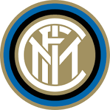
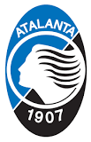
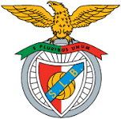
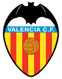
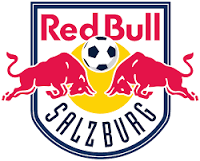
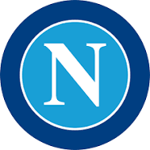
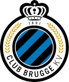
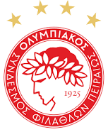
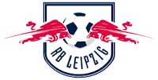

Champions League 2019-2020 - A Review
Champions League 2019-2020 - A Review
Teams

FC Barcelona
Arena/Stadium: Camp Nou
President: Josep Maria Bartomeu
Location: Barcelona, Spain
Founded: 29 November 1899
Manager: Quique Setien

Real Madrid
Manager: Zinedine Zidane
Arena/Stadium: Santiago Bernabéu Stadium
Location: Madrid, Spain
Founded: 6 March 1902
President: Florentino Perez

Juventus F.C.
Arena/Stadium: Allianz Stadium Trending
Manager: Maurizio Sarri
Location: Turin, Italy
Owner: Agnelli

Liverpool F.C.
Arena/Stadium: Anfield
Manager: Jürgen Klopp
Location: Liverpool, United Kingdom
Owner: Fenway Sports Group
Founded: 3 June 1892

Chelsea F.C.
Manager: Frank Lampard
Arena/Stadium: Stamford Bridge
Owner: Roman Abramovich
Location: Chelsea, London, United Kingdom
Nicknames: The Blues, The Pensioners, Blues, Pensioners

Manchester City F.C.
Owner: City Football Group
Manager: Pep Guardiola
Arena/Stadium: Etihad Stadium
Location: Manchester, United Kingdom
Nicknames: Man City, City, The Citizens, The Sky Blues

FC Bayern Munich
President: Herbert Hainer
Manager: Hans-Dieter Flick
Arena/Stadium: Allianz Arena
Location: Munich, Germany

Paris Saint-Germain F.C.
Arena/Stadium: Le Parc des Princes
Manager: Thomas Tuchel
Owner: Qatar Sports Investments
Location: Paris, France

Olympique Lyonnais
Arena/Stadium: Groupama Stadium
Manager: Rudi Garcia
Owner: OL Groupe (80%); IDG Capital Partners (20%)
Location: Lyon, France

Inter Milan
Arena/Stadium: San Siro Stadium
Head coach: Antonio Conte
Owner: Suning Holdings Group
Location: Milan, Italy

Borussia Dortmund
Nickname: BVB
Arena/Stadium: Signal Iduna Park
Manager: Lucien Favre
Owner: Reinhard Rauball
Location: Dortmund, Germany

Tottenham Hotspur F.C.
Arena/Stadium: Tottenham Hotspur Stadium Trending
Manager: José Mourinho
Owner: ENIC Group (85.55%)
Location: Tottenham, London, United Kingdom
Nicknames: The Lilywhites, Spurs

Atlético Madrid
Arena/Stadium: Wanda Metropolitano Stadium
Manager: Diego Simeone
Capacity: 68,456
Owners: Miguel Ángel Gil Marín (51%), Idan Ofer (30%), Enrique Cerezo (19%)

AFC Ajax
Manager: Erik Ten Hag
Arena/Stadium: Johan Cruijff Arena
Location: Amsterdam, Netherlands
Captain: Dušan Tadić

Atalanta B.C.
Arena/Stadium: Stadio Atleti Azzurri d'Italia
Manager: Gian Piero Gasperini
Location: Bergamo, Italy
Nickname(s): La Dea (The Goddess); Gli Orobici; I Nerazzurri (The Black and Blues)

Galatasaray S.K.
Arena/Stadium: Türk Telekom Stadium
Manager: Fatih Terim
Chairperson: Mustafa Cengiz
Location: İstanbul, Turkey

S.L. Benfica
Location: Lisbon, Portugal
Arena/Stadium: Estádio Sport Lisboa e Benfica
Manager: Bruno Lage
Nickname(s): As Águias (The Eagles); Os Encarnados (The Reds); O Glorioso (The Glorious One)

Valencia CF
Manager: Albert Celades
Arena/Stadium: Mestalla Stadium
President: Anil Murthy
Owner: Peter Lim
Nickname(s): Los Ches; (The Mates); Els Taronges; (The Oranges)

A.S. Roma
Arena/Stadium: Stadio Olimpico
Manager: Paulo Fonseca
Owner: NEEP Roma Holding S.p.A. (79.04%)
Nickname(s): I Giallorossi (The Yellow and Reds); La Lupa (The She-Wolf); La Magica (The Magic One)

FC Red Bull Salzburg
Chairman: Harald Lürzer
Manager: Jesse Marsch
Arena/Stadium: Red Bull Arena
Founded: 13 September 1933, Salzburg, Austria

SSC Napoli
Arena/Stadium: San Paolo Stadium
Location: Naples, Italy
Founded: 25th August,1926
Manager: Gennaro Gattuso

Club Brugge KV
Arena/Stadium: Jan Breydel Stadium
Manager: Philippe Clement
Location: Bruges, Belgium
Nickname(s): Blauw-Zwart (Blue-Black), Club, FCB

Olympiacos F.C.
Arena/Stadium: Karaiskakis Stadium
Head coach: Pedro Martins
Location: Pireas, Greece
Owner: Evangelos Marinakis

FK Crvena Zvezda
Arena/Stadium: Rajko Mitic Stadium
President: Svetozar Mijailović
Head coach: Dejan Stanković
Location: Belgrade, Serbia

FC Shakhtar Donetsk
Arena/Stadium: Metalist
Location: Donetsk, Ukraine
Manager: Luis Castro
Founded: 24 May 1936, Donetsk, Ukraine

GNK Dinamo Zagreb
Arena/Stadium: Stadion Maksimir
Location: Zagreb, Croatia
Manager: Nenad Bjelica
Founded: 9 June 1945, Zagreb, Croatia

Bayer 04 Leverkusen Fußball GmbH
Nickname(s):Die Werkself (The Company‘s Eleven)
Ground:BayArena
Owner:Bayer AG
Administration:Fernando Carro (CEO), Rudi Völler (Managing Director Sports)
Head Coach:Peter Bosz

FC Lokomotiv Moscow
Nickname(s): Loko, Parovozy (Steam Locomotives)
Arena/Stadium: Lokomotiv Stadium
Manager: Yuri Semin
Location: Moscow, Russia

K.R.C. Genk
Arena/Stadium: Luminus Arena
Manager: Hannes Wolf
Capacity: 23,718; 21,500 (UEFA matches)
Location: Genk, Belgium

SK Slavia Prague
Arena/Stadium: Sinobo Stadium
Owner: Sinobo Group, CITIC Group
Manager: Jindřich Trpišovský
Location: Prague, Czechia

RB Leipzig
Manager: Julian Nagelsmann
Arena/Stadium: Red Bull Arena
Owner: Red Bull GmbH (99%)
Nickname(s): Die Roten Bullen (The Red Bulls)

FC Zenit Saint Petersburg
Arena/Stadium: Gazprom Arena
Manager: Sergei Semak
Nickname(s): Lvy (Lions); Sine-Belo-Golubye (The Blue-White-Sky Blues); Zenitchiki (The Zeniters)
Location: Saint Petersburg, Russia

Lille OSC
Manager: Christophe Galtier
Arena/Stadium: Stade Pierre Mauroy
Nickname(s): Les Dogues (The Great Danes)
Location: Lille,France
Owner: Gérard Lopez